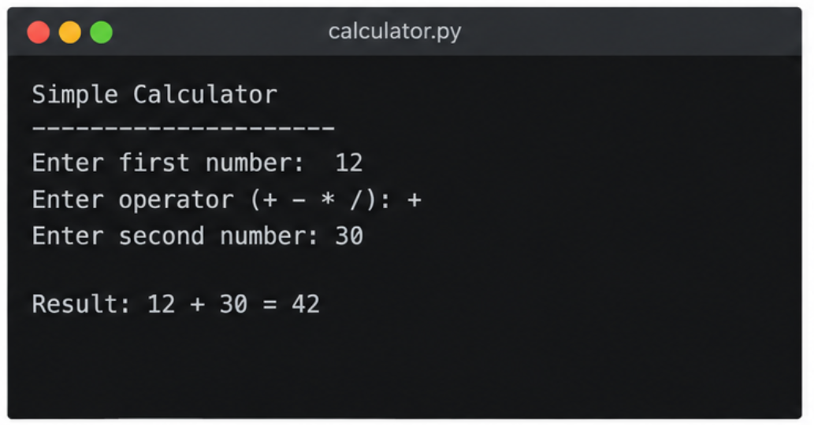
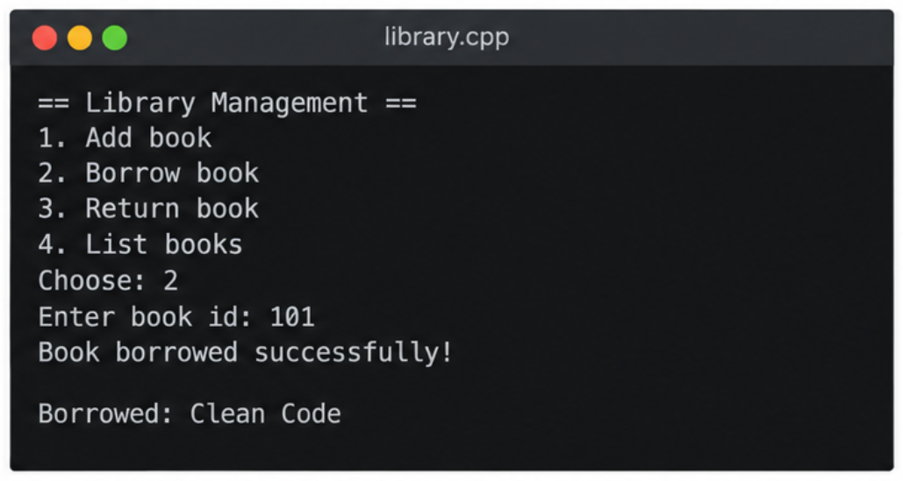
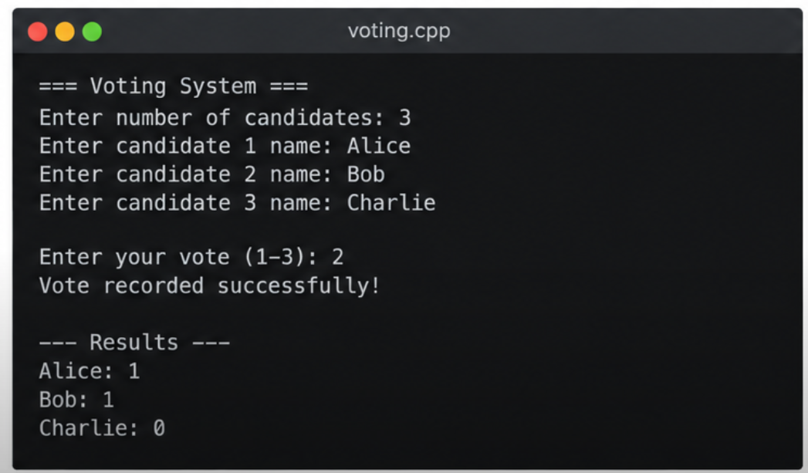

Back to Home
My Projects
Project Summary
Project Summary
| Project |
Language |
Year |
Link |
| Simple Calculator |
JavaScript |
2026 |
View project |
| Library Management System |
Python |
2025 |
View project |
| Voting System |
c++ |
2025 |
View project |
| Total projects |
3 |
Simple Calculator
A calculator that performs basic arithmetic operations.

How I built it
- I planned the calculator features.
- I created the HTML structure.
- I added CSS to style the calculator.
- I used JavaScript to perform calculations.
Technologies Used
Library Management System
A system for managing books and borrowing records.

How I built it
- I identified the library system requirements.
- I designed the book and borrower data structures.
- I wrote code to add and search for books.
- I implemented borrowing and returning operations.
Technologies Used
Voting System
A voting system that allows eligible users to vote
and helps manage and count votes.

How I built it
- I identified the requirements of the voting system.
- I designed the user interface for voters and administrators.
- I implemented voter registration and authentication.
- I developed the voting process and vote-counting functionality.
Technologies Used
- HTML
- CSS
- JavaScript
- Python
- Django
- PostgreSQL
Official HTML reference:
W3C Website
Contact me